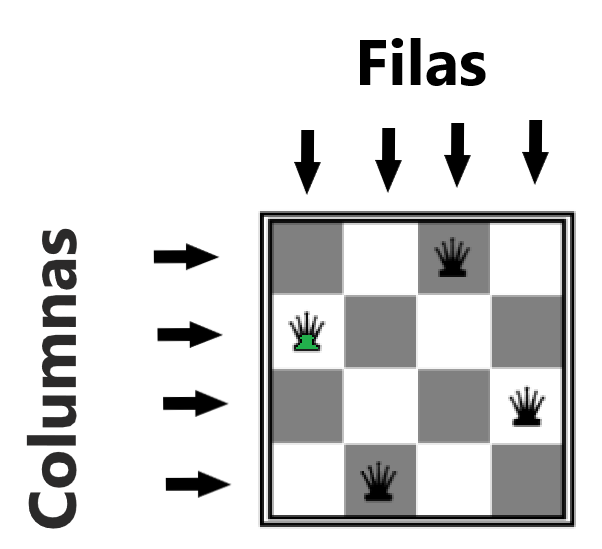

Para su solución, es conveniente el uso de vectores en donde cada un vector con N números enteros indicara las posiciones de las reinas en el tablero de modo que el primer número se correspondería con la posición de la primera reina dentro de la primera fila, es decir, la columna en la que estaría la reina dentro de la primera fila. El segundo número se correspondería con la posición de la segunda reina dentro de la segunda fila y así continuaríamos hasta las N reinas en el tablero NxN.
Ejemplo de 4 reinas para un tablero 4x4:
Por ejemplo, en un problema de 4 reinas, un vector podría ser [1, 3, 0, 2], donde el valor del vector en la posición [0] es (1) indica que hay una reina en la fila 0, columna 1.

Verificaciones de ataques
-
Verticales y horizontales
Por definicion las filas se verifican por defecto, al tener que asignarles un valor a la variable. Es decir, por la forma del modelo, no pueden haber dos reinas en la misma fila, por lo que esa restricción se omite. En cuanto a las columnas esto se verifica observando los valores de las variables del arreglo. Si estos son distinto, entonces se cumple con la restricción, si son iguales, no.
Por ejemplo en la figura 1 el arreglo seria [1, 3, 0, 2] y en la figura 2 seria [1, 3, 0, 1] vemos que el uno se repite en el arreglo por ende se observa un ataque.
-
Diagoles ascendentes y decendentes
Estas diagonales se dividen en dos ascendentes (+) y decendentes (-) se obtienen de la suma o resta de sus indices (i j) tal y como se muestra enseguida.
podemos cuncluir que si la resta de los valores del arreglo son iguales a la resta de sus indices entonces estamos ante 2 reinas en la misa diagonal sea descendente o ascendente.
\[
| \text{vector}[i] - \text{vector}[j] | = | i - j |
\]